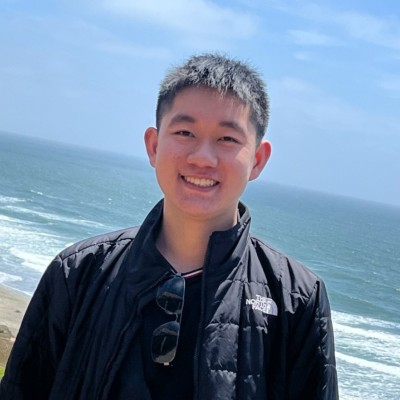

Owen Chen

About Me
I'm an undergraduate at Dartmouth College majoring in Computer Science.
I have a strong interest in artificial intelligence (both applied and theoretical) and human-computer interaction (with a focus on AR/VR technologies).
Currently, I'm actively seeking research opportunities.
Experience
-
Research Assistant – DREAM Studio, Dartmouth College
September 2024 – Present
Contributing to Deep Screens, a Mellon Foundation grant project that seeks to extract information about actor poses from movies using machine learning and utilize that information to create a 3D representation of the film viewable in a VR environment. Deep Screens studies the differences in people's perceptions of the transformed movie compared to the original, as well how acting styles have changed over time.
Contributing to 44,000,000,000 Moments of Joy, a Hopkins Center grant project that attempts to flip the dynamic between humans and generative AI. The project combines object detection with LLM generation to produce artistic performance instructions that serve as “prompts for humans,” which are meant to facilitate human creative expression rather than replace it, as well as encourage active, rather than passive, engagement on social media.
-
Section Leader, COSC 31: Algorithms – Dartmouth College
June 2025 – Present
Regularly host office hours and grade coursework.
-
Software Engineering Intern – HelloHost
February 2024 – August 2024
Developed backend systems and agentic workflows.
Projects
-
VivaSign – HackDartmouth X
April 26-27, 2025
An interactive ASL learning tool that evaluates the accuracy of users’ attempts at sign language by analyzing each keyframe of their sign according to the "5 parameters of ASL" (handshape, location, movement, palm orientation, and non-manual markers). The user is given personalized feedback through Gemini. The project won the sponsor prize, “Best Use of Gemini API.”
View Devpost
-
The Conservation Principle – GMTK Game Jam 2024
August 16-20, 2024
A 2D physics-based puzzle platformer ranking in the top 7.5% of all GMTK 2024 games and in the top 200 of games in the enjoyment category out of ~7600 submissions.
View Submission
Coursework
Algorithms · Programming Languages · Systems Programming (Reading Course) · Object-Oriented Programming · Discrete Math · Linear Algebra · Digital Electronics
Certificates